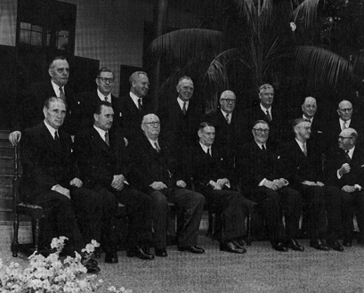

1. INTRODUCTION

Figure 1: The Nationalist Cabinet in 1948.
Back row (l to r): E. H. Louw; Dr. T. E. Donges; F. C. Erasmus; B. J. Schoeman;
J. F. Naude; Sen. H. Verwoerd; J. H. Viljoen; Dr. K. Bremer.
Front row: S. P. le Roux; J. C. Strydom; Dr. D. F. Malan; Dr. E. G. Jansen; N. C. Havenga;
C. R. Swart & P. O. Sauer.